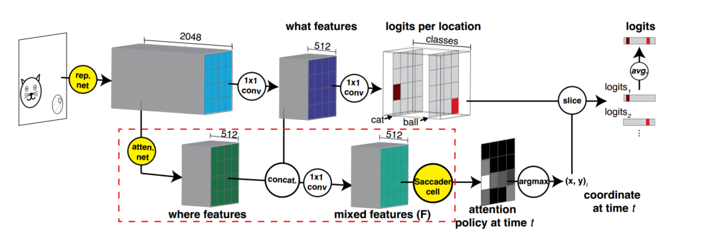
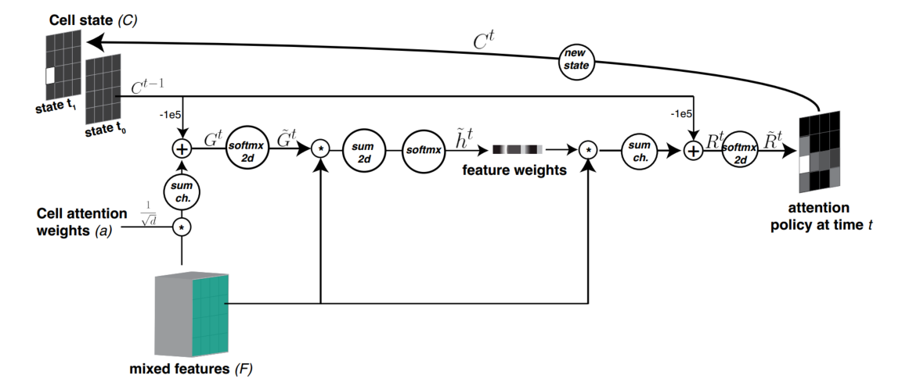
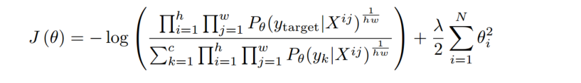
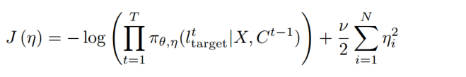
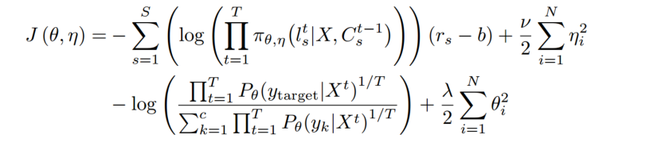
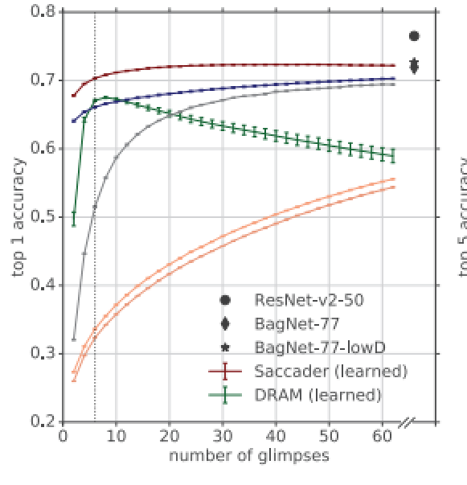
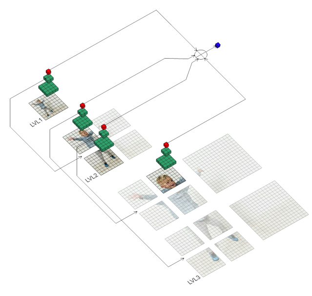
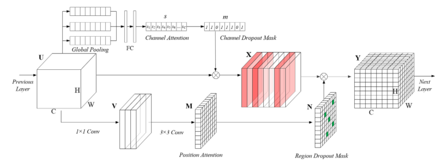

Tips in Papers
1. Attention
1.1. Hard and Soft Attention
1.1.1. Attention Mechanisms in CV: A Survey
1.2. Gumbel-Softmax Hard Attention
1.2.1. Categorical Reparameterization with Gumbel-Softmax
1.2.1.1. 文章引出了一类神经网络，Stochastic Neural Networks with discrete random variables。
具有离散随机变量的随机神经网络
1.2.1.2. 文章引出了一个方向，Stochastic Gradient Estimation
随机梯度估计，主要的方法就有 dumbel-softmax, score function estimator, biased path derivative estimator。
However, no existing gradient estimator has been formulated specifically for categorical variables.
1.3. Reinforce Learnning Hard Attention
1.3.1. 2019 Scacader: Improving Accuracy of Hard Attention Models for Vision
1.3.1.1. Hard Attention 选择相关的特征作为输入，是真正具有可解释性的。
从下面第一段话，可以看出，hard attention 是真正和性能挂钩的。也一定和特征重要性 是吻合的。但是 Soft Attention 不具有可解释性，小权重的特征并不一定不重 要
Our best models narrow the gap to common ImageNet baselines, achieving 75% top-1 and 91% top-5 while attending to less than one-third of the image.We further demonstrate that occluding the image patches prposed by the Saccader model highly impairs classification, thus confirming these patches strong relevance to the classification task.
Typical soft attention mechanisms rescale features at one or more stages of the network. The soft mask used for rescaling often to provide some insight into the model’s decision-making process, but the model’s final decision may nonetheless rely on information provided by features with small weights <sup id=“fnref:1”>1
\
1.3.1.2. 文中 glimpse 的含义，可以理解成每一个位置，即每一个 patch，就是一个 glimpse。
Models that employ hard attention make decisions based on only a subset of pixel in the input image, typically in the form of a series of glimpses.
1.3.1.3. 文章提出了 Hard Attention 与双阶段目标检测算法的相似性。他们都是截取图像块作为输入，然后进行分类。不同的是，目标检测算法对于目标的位置是有标签的，而 Hard Attention 是无标签的。
Altough our aim in this work is to perform classification with only image-level class labels, out approach bears some resembalance to two-stage object detection models.
These models operate by generating many region proposals and then applying a classification model to each proposal.
Unlike our work, these approaches use ground-truth bounding boxes to train the classification model, and modern architectures also use bounding boxes to supervise the proposal generator.
目标检测和 Hard Attention 的相似之处在于，他们都同时关注目标的位置和类别。相比 于目标检测，Hard Attention 可以做的更精细, i.e., 它可以像目标检测一样在图像域上 挑选特征，它还可以在任意一个特征域里挑选特征；它不仅可以像目标检测一样，挑选空域 的特征，还可以挑选通道域的特征。
1.3.1.4. 总结构
最上面的 rep. net 以及 logits per location 之前都属于 representation network。这 部分挺常规，但是使用了‘BagNet’<sup id=“fnref:2”>2的方法，该方法保持了输出特征图中每个像素的感 受野大小。
下面的 atten. net 就是几个卷积层的堆叠。没有 attention 机制。到 Sacadder cell 之 前都是常规操作，除了一个 what 和 where 的 concat 得到 mixed。
Saccader cell 是技术关键点。
coordinate at time t 的 slice 操作，对于坐标的选择而言，是一个不可导的操作。这 里是强化学习介入的地方。而且注意，这里 t 是一个序列，最后的 prediction 是求平均 。
\
1.3.1.5. Saccader cell
值得注意的几点
- Cell state 是一个 state 的序列，每个 state 都是一个经过 2d softmax 的 logit。这个 logit 表示该 state 预测的位置。
This cell produces a sequence of locations. Elements in the sequence correctpond to target locations.
- 需要保证 cell state 中预测之间都是不同的。记录了 t 时刻位置探索过的所有 位置。那些位置的值是 1。所以两次介入的计算都乘以一个非常小的 数 ，这样就保证了在 2d softmax 的时候，探索过的位置无法胜出。
The cell includes a 2D state () that keeps memory of the visited locations until time t by placing 1 in the corresponding location in the cell state. We use this state to prevent the network from returning to previously seen locations.
从这里也看出 state 和 sequence 是不同的。state 是记录探索过的位置。从途中可以 看出 state 是非 01 的，而由 1 可知，sequence 应该是图中右边产生 logic。state 的 目的，其实也是为了产生 logic。
-
在制作的过程中，信息来源有两个 mixed feature 和。最后得到 的通道是 1，所以 mixed feature 空间维度的压缩是必然的。在压缩的时候，选 用了 channel attention 机制。channel attention 机制又需要先空间压缩，这里不 像 SE-Net 一样直接压缩空间，而是又做了一个空间的 mask 压缩空间，这个 mask 用 了的信息，去除掉了已经探索的位置信息。
-
At test time, the model extracts the logits at time from the representation network at location .The final prediction is obtained by averaging the extracted logits across all times.
Saccader Cell 的关键就在于产生一系列的 sequence。这些 sequence 可以用强化学习 算法优化，使其可以预测物体的位置，从而就进行了 feature 的选择。
1.3.1.6. 训练策略
The goal of our training is to learn a policy that predicts a sequence of visual attentnion locations that is useful to the downsteam task (here image classification) in absence of location labels.
We performed a three step training procedure using only the training class lables as supervision.

- 预训练了 representation network
这个公式增大了目标的概率。增大的某个位置上的概率，而且 所有位置连乘之后的概率。这里假设 region of interest 的概率将会被增大的最多。通过 这种方法就自动学习到了一些好的 position，在强化学习优化的时候，提供了一个好的探 索的起点。
Key to Saccader is a pretraining step that require only class lables and provides initial attention locations for policy gradient optimization.
Our pretraining procedure overcomes the sparse-reward problem that makes hard attention models difficult to optimize. It requires access to only class lables and prvides initial attention locations.These initial locations provide better rewards for the policy gradient learning.

- 训练了 location network (attention network, mixing convolution and Sacader cell)
这是一个自监督的预训练。提高了前 T = 12 次预测的点的概率。
文中说排序了，我感觉排序的次序和预测的次序是一致的。第一次预测是概率最大的，最后 一次预测是概率最小的。后面实验对比了该预训练对性能的影响。然而 ，现在还并不能完全了解这个预训练的作用机制。

-
we trained the whole model to maximize the expected reward, where the reward () represents whether the model final prediction after 6 glimpses (T = 6) is correct.
这个公式并没有完全读懂。
用的是策略网络的方法。是按 saccader cell 输出的位置概率生成的位置。公式的 第一行就是增大这个概率的值。当模型最后做出了正确预测的时候，r 权重大，损失函数以 更大的权重增大这个预测的概率，这就是策略网络的方法。等式的第二行是修正分类网络， 当预测正确的时候，那么有监督的增大这 T 个预测位置在上的准确率 。
由公式 1 和公式 3 看出，对于图像空间，loss 函数只是增大预测点的概 率，然后不会理会，空间上其他点预测的是什么。
如果 saccader cell 的性能非常好，那么模型是没问题的。如果 saccader cell 预测会有 误差，比如抗干扰能力不好，预测到目标以外的 patch 上，那么性能会被影响。
论文中说 ，当预测的位置不存在的时候，模型的性能受到很大的影响。那么其实抑制预测之外的位置的，激活值会使得可以解释性更强？
1.3.1.7. 论文对比了 ordered logits policy 和 Saccader
An ordered logits policy uses the BagNet model to pick the top K locations based on the largest class logits.
Ordered logits policy 选择了在空间上最大激活的位置，作为物体的位置，并把该预测作 为物体类别的预测。
The ordered logits policy strats off with accuracy much higher than a random policy, suggesting that the patches it initially picks are meaningful to classification.
However, accuracy is still lower than the learned Saccader model, and performacne improves only slowly with additional glimpese. The ordered logits policy is able to capture some of the features relevant to classification, but it is a greedy policy that produces glimpses that cluster around a few top features (i.e., with low image coverage)
ordered logits policy 的缺陷在于，只关注了最重要的少数的特征。它的预测都围绕在这 些最重要的特征周围，所以增加 glimpese 的时候，很少新的信息引入，所以 performance 增长的很慢，而 Saccader 没有这个问题，它关注了完整的信息。
1.3.1.8. 空间上其他位置
如上文所说，Sccader 只优化选中的位置，不管没有被选中的位置。那么当增加 glimplese 的时候，它的性能应该会受到影响的。但是不是。
In fact, increasing the number of glimpses beyond the number used for DRAM policy training leads to drop in performane, ulike the Saccader model that generalizes to greater umbers of glimpses.
如图可以看出，增大 glimpses 的时候，准确率反而在增加。说明在训练的时候，没有被训 练到的地方，Saccader 的预测也还可以，与上文所说的理解不同 。原因是什么还有待探究。
1.3.2. Hard Attention for Scalable Image Classification
1.3.2.1. 介绍
Muti-scale processing in the proposed TNet architecture. Starting from level 1, the image is processed in low resolution to get a coarse description of its content (red cube). Extracted features are used for (hard) selection of image regions worth processing in higher resolution. The process is repeated recursively (here to 2 additional levels). Features from all levels are combined (arrows on the right) to create the final image representation used for classificaiton (blue cube).
先粗后细的粗粒不同尺度的图像，这篇文章使用和实现了 Saccader
1.4. Soft Attention
1.4.1. NAM, Normalization-based Attention Module
1.4.1.1. 利用网络参数的信息，进一步处理数据（再利用）
Those methods successfully exploit the mutual information from different dimensions of feawture. However, they lack consideration on the contributing factors of weights, which is capable of furthr suppressing the insignificant channels or pixels.
网络参数本身是表达了一定的信息的，比如某个卷积核提取什么样的信息，本身也代表一种 信息。神经网络中，每个参数都在图像的处理过程中使用一次，然而，一次是否就已经用 完了该参数的信息。它是否还有其他价值？
文章重复利用了 bn 层中的权重，文章任务 bn 层的权重可以表达特征图的重要程度。然而 attention 正好又需要特征图的重要程度。所以文章在 attention 中利用了 bn 层的权重 。使得 bn 的权重出现重复利用的现象。
1 | class Channel_Att(nn.Module): |
1.4.1.2. 关于权重稀疏性
It applies a weightsparsity penalty to the attention modules, thus, making them more computational efficient while retaining similar performance.
To suppress the less salient weights, we add a regularization term into the loss function.
第一项是正常的损失函数，第二项和第三项的是一范数，是通道注意力中 bn 的权重，是空间注意力中 pix normalization 的权重。加上这两项使得通道 和空间注意力都有了稀疏性。
loss 函数增加了权重的稀疏性，attention 把权重的稀疏性转换为 了特征的稀疏性，然而这个稀疏性并不是丢弃了特征或者权重，为什么它能够带来 computational efficient? 文章确实有 computational efficient，但是根据实验部分的 列表，parameter 和 FLOPS 的优势都是这个注意力机制的结构带来的，相比于其他注意力 机制，它是轻量而且计算低的。但是稀疏性和计算复杂度是无关的。
1.4.1.3. 启发
这篇文章给人一个启发是参数复用，神经网络中所有参数几乎不会 复用。然而，除了文中提出的这个例子，是否还存在其他需要复用的场景或者理由 。
参数复用可以看成另一种权值共享，卷积是层内的权值共享，参数 复用是层间的权值共享，它是一种正则化，它对不变性产生什么影响？
2. Regularization
2.1. ADCM: Attentnion Dropout Convolutional Module

在 CBAM 的基础上加入了正则化，把 CBAM 产生的 attention weights 作为 Drop 的概率 引导，来对 feature map 进行 drop。是一种对 attention 机制的正则化方法，很容以把 它误解为 hard attention。